Esta "api" es la encargada de trabajar con la fución de arrastrar y soltar elementos, debido a que esta "api" tiene una estrecha realción con las interaccionnes del usuario, cuanta con multiples eventos que se aplicaran a los diferentes elementos involucrados.
Eventos del Objeto
Se trata de los eventos que se desencadenan al arrastrar un elemento, para esto es necesario que la acción se desencadene desde el contenido del elemento, no desde sus bordes, los eventos de este tipo son:
-
Gragstart: Este evento se dispara en el momentos en el que es "sujetado" el elemento en cuestión
Ejemplo
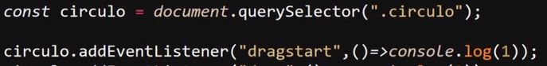
-
Drag: Este evento se dispara mientras un elemetos es sujetado
Ejemplo
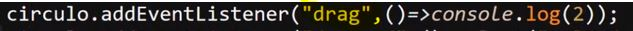
-
Dragend: Este ultimo evento se dispara en el momento en el que el objeto arrastrado es soltado
Ejemplo
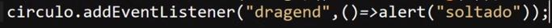
Eventos de Zona
Se tratan de los eventos que posee el objeto sobre el cua se esta desplazando el elemento arrastrado, estos eventos son:
-
Dragenter: Este evento se dispara en el momento en que el elemento arrastrado ingrese en el interior del elemento de fondo, en otras palabras el elemento de fondo persive cuando el elementos arrastrado entre dentro de su zona.
Ejemplo
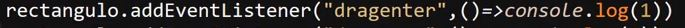
-
Dragmove: Este evento se dispra mientras el elemento este siendo arrastrado sobre la zona del el elemto de fondo,
Ejemplo
-
Drop:Este evento se dispara cuando el elemento arrastrado es soltado sobre el elemeto de fondo, sin embargo este evento cuenta conuna particularidad, este es que por defecto su ejecución se encuetra BLOQUEADA al menos que se indique lo contrario.
En otras palabras este evento solo se ejectuara sobre los eventos de fondo en los que se les indique que esto puede suceder, para definir esta "autorización" es necesario pasar un parametro (comunmente llamado "e") al evento "dragmove" y luego definir que NO se utilise la configuración por defecto
Por lo tanto la ejecución de este evento depende del evento "dragmove" ya que es este el que determina si el objeto se puede soltar en una sección, esto lo hace de la siguite forma:
Ejemplo
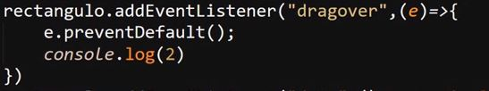
Ejemplo de Drop
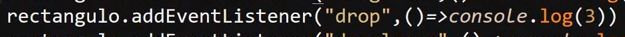
-
dragleave: Este evento se dispara en el momento en el que el objeto salga del elemento de fonod, en otras palabras el elemento de fondo detecta cuando el elemeto arrastrado deja de estar ubicado sobre este
Ejemplo
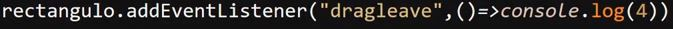
Propiedad DataTransfer
Se trata del objeto encargado de transferir datos entre los diferentes elementos, es decir este objeto es el encargado de inidcarle a los diferentes elementos de fondo que otro elementos se esta desplazando sobre ellos o indicar al elementos arrastrado que se esta desplazando por la paguina.
El funcionamiento de este objeto radica en eplicarlo dentro del evento "dragstart", y para acerlo es necesario proveer de un parametro (parametro "e") a la función de ejecución del evento, para poder hacer uso del objeto utilizando la propiedad ".dataTransfer", de la siguiete forma:
Ejemplo
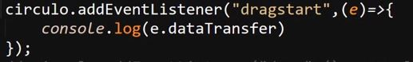
Resultado
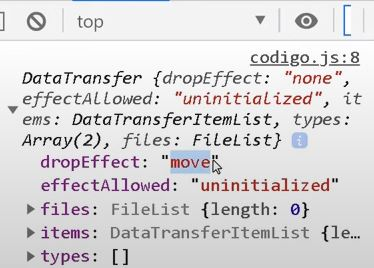
En este ejemplo se muestra el objeto "dataTransfer" en consola, lo cual permite ver todos sus datos, eventos y propiedades.
Este objeto en pocas palabras es compartido entre el elemento arrastrado y el elemento de fondo sobre el cual este se despalaza, para que el elemento arastrado comparta el objeto es necesario definir el elemento al que este pertenece así como el dato a ser compartido.
Esto se realiza aplicando el metodo ".dataTransfer" al parametro ingresado ("e"), luego se aplica el metodo ".setData" al cual se le indica el nombre del parametro entre comillas (" "), seguido del valor del parametro que se desea compartir en el objeto
Ejemplo
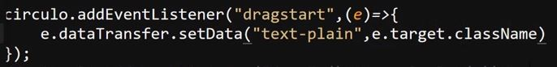
En este caso se usa el parametro "e" para acceder al objeto "dataTransfer", se usa el metodo setData en el cual se define el nombre del parametro a ingresar en el objeto, seguido del valor del parametro, en este caso se nombra como "text-plain" y se usa el parametro "e" con el metodo ".target.className" para aceder a la clase del elemento arrastrado y ingresarla en el objeto para ser compartida con los elemtos de fondo
Nota: Normalemte no se utiliza la clase para esto, ya que más de un objeto puede poseer una misma clase, lo más comun es que se utilise un "id", pero para fines del ejemplo se utiliza la clase.
Por otro lado para obtener el los datos se utiliza el metodo ".getData" el cual funciona casi del mismo modo que "setData", con la diferencia de que este unicamete necesita el nombre del parametro enviado en el objeto para acceder a este.
Ejemplo
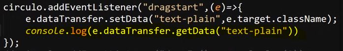
Por ultimo para obtener los datos desde otro lugar se recuerre al evento "drop", en el cual se utiliza el metodo ".getData" de la misma manera ya mostrada:
Ejemplo
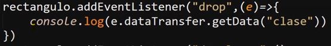